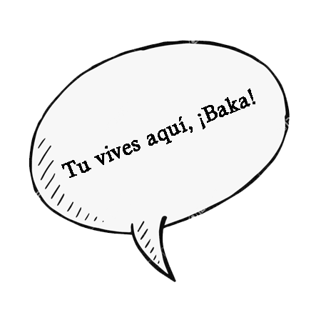
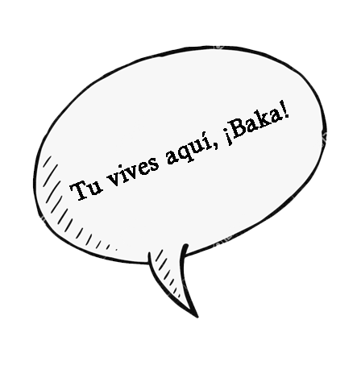

Free Plastic Project
The world can be a better place without so much plastic.
El plástico está más presente en nuestro día a día de lo que pensamos, no solo son las botellas o recipientes de la comida, también está en los pitillos, en los copitos para los oídos, incluso los vasos de icopor tienen una recubierta de plástico, a esto se le conoce como “plásticos clamufados”.
El plástico es hecho con polímeros de compuestos orgánicos, es un material sintético que se puede moldear fácilmente, además contiene sustancias derivadas de petroquímicos.
El plástico afecta a la tierra, el agua y el aire, su largo tiempo de degradación provoca múltiples daños en los ecosistemas, aunque el reciclaje es una buena opción para disminuir la contaminación en la tierra por el plástico, la verdad es que ya no es una medida suficiente, definitivamente tanto el consumo como la producción de plástico se debe reducir.
En el caso del agua, se tiene conocimiento de que al menos existen 5 islas grandes de basura, que por el movimiento del agua se sigue extendiendo a costas y mares. Este plástico afecta a las especies marinas, en algunos casos los animales terminan enredados con los plásticos o, el peor de los casos, los consumen y pueden provocar su muerte.
En cuestiones del aire, la producción de plástico libera gran cantidad de toxinas en el ambiente, también cuando se es quemado, tanto así que el plástico es uno de los principales contaminantes del medio ambiente.